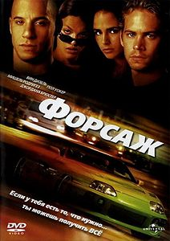

Форсаж 1 - американский боевик 2001 года, снятый Робом Коэном по сценарию Гэри Скотта Томпсона, Эрика Бергквиста и Дэвида Эйера, основанному на статье «Racer X» из журнала Vibe, написанной Кеном Ли. Первая часть франшизы «Форсаж», в которой Вин Дизель играет Доминика Торетто и Пол Уокер в роли Брайна О’Коннера, а Мишель Родригес и Джордана Брюстер играют второстепенные роли. В фильме недавняя волна угонов грузовиков заставляет О’Коннера, офицера полиции, работать под прикрытием и подружиться с Торетто, местным уличным гонщиком, чтобы расследовать это дело.
Перехід на другу сторінку